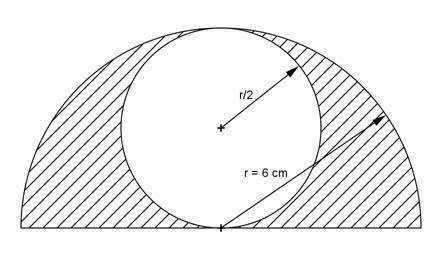
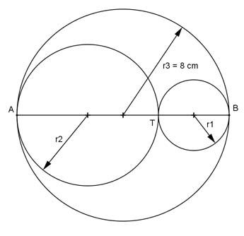
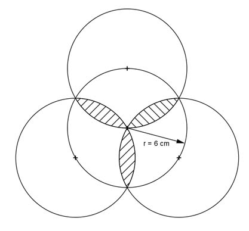
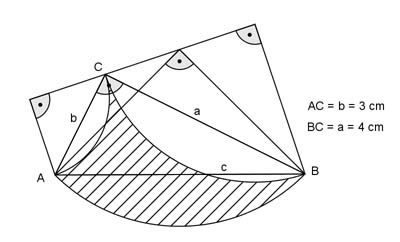
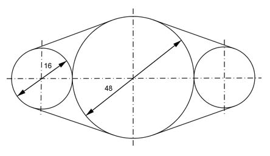
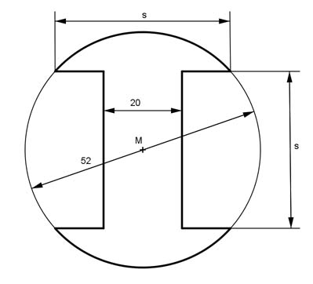
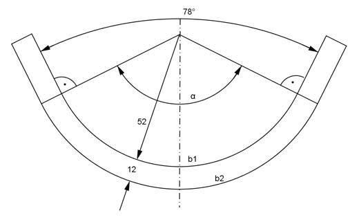
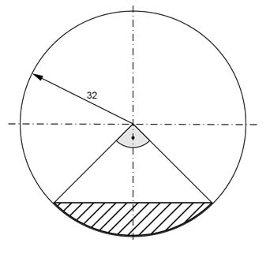
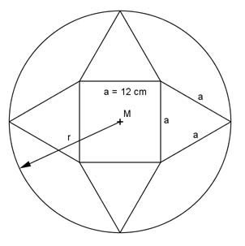
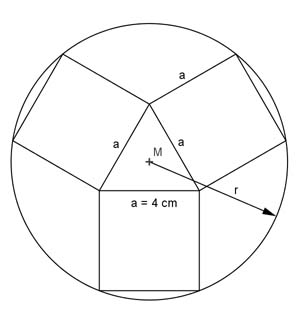

Aufgabe 111
Wie groß ist die schraffierte Fläche?

Wie löse ich Matheaufgaben?
Flächenberechnungen
Aufgabe 109 Wie groß ist der Durchmesser d eines Kreises mit einer Fläche von 30 cm²?
Aufgabe 110 Wie groß ist der Umfang U eines Kreises mit einer Fläche von 8 cm²? U = cm
Aufgabe 111 Wie groß ist die schraffierte Fläche?
Aufgabe 112 Wie groß ist die schraffierte Fläche?  Sie ist cm² groß.
Aufgabe 113 AB ist durch T stetig geteilt. In welchem Verhältnis stehen A₁, A₂ und A₃ zueinander? 
Aufgabe 114 Ein Kreisring hat einen inneren Radius von 5 cm und eine Fläche von 12 cm²? Wie groß ist der äußere Radius ra? ra = cm
Aufgabe 115 Ein Kreisring hat eine Fläche von 40 cm². Die Summe seiner Radien ergibt 20 cm. Wie groß ist der Innenradius ri?
Aufgabe 116 Ein Kreisring hat einen Außenradius von 12 cm. Er soll die gleiche Fläche wie sein Innenkreis haben. Wie groß ist der Innenradius ri? ri = cm
Aufgabe 117 Die Seite eines gleichseitigen Dreiecks von 6 cm sei gleich dem Außenradius eines Kreisrings, seine Höhe gleich dem Innenradius. In welchem Verhältnis steht die Fläche des Kreisrings zur Fläche des Innenkreises?
Aufgabe 118 Ein rechteckiges Bauteil mit einer Länge von 24 cm und einer Breite von 15 cm soll durch ein kreisrundes ersetzt werden. Wie groß muss dessen Durchmesser d sein? d = cm
Aufgabe 119 Wie groß sind der Mittelpunktswinkel α und die Fläche A?
Aufgabe 120 Wie groß ist die schraffierte Fläche A?
A = cm²
Aufgabe 121 Wie groß ist die schraffierte Fläche A?

Aufgabe 122 Der Bogen b eines Kreissektors sei gleich dem Radius r = 4 cm des Kreises. Wie groß sind die Sektorfläche A und der Radius r₁ eines Kreises, der dem Sektor flächengleich ist? A = cm²
Aufgabe 123 Wie groß ist die schraffierte Fläche A? 
Aufgabe 124 Sektor und Segment eines Kreises seien flächengleich. Wie groß muss der Bogen b des Sektors sein, wenn der Bogen b₁ des Segments 5 cm , die Bogenhöhe 1 cm und die Sehne 4 cm betragen? b = cm
Aufgabe 125 Wie groß ist die schraffierte Fläche A? 
Aufgabe 126 Wie groß ist die schraffierte Fläche A?
A = cm²
Aufgabe 127 Wie groß ist die schraffierte Fläche A?
Aufgabe 128 Wie groß ist die rot umrandete Fläche A? A = mm²
Aufgabe 129 Wie groß ist der Umfang U? 
Aufgabe 130 Wie groß sind s und die Fläche A des Bauteils?  A = mm²
Aufgabe 131 Wie groß sind der Winkel α und die Bögen b1 und b2? 
Aufgabe 132 Wie groß ist die schraffierte Fläche A?  A = mm²
Aufgabe 133 Wie groß ist die schraffierte Fläche A?
Aufgabe 134 Wie groß ist der Radius r der kleinen Kreise? r = cm
Aufgabe 135 Wie groß ist der Radius r der kleinen Kreise?
Aufgabe 136 Wie groß ist der Radius r?  r = cm
Aufgabe 137 Wie groß ist der Radius r? 
Aufgabe 138 Ein rechtwinkliges Dreieck hat die Fläche A = 80 cm². Eine Kathete verhält sich zur Hypotenuse wie 3 : 5. Wie lang sind die Dreieckseiten? Hypotenuse = cm
Aufgabe 139 Wie groß ist der Abfall in Prozent, wenn bei einem Rechteck (140 mm * 200 mm) die Ecken mit einem Radius von 20 mm abgerundet werden?